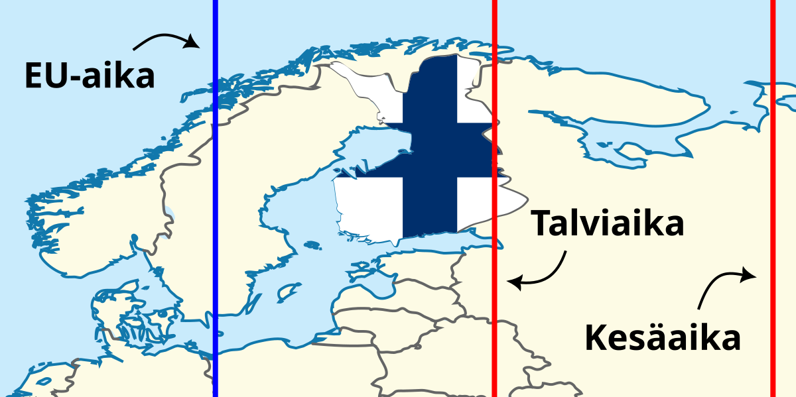
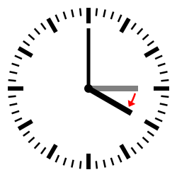
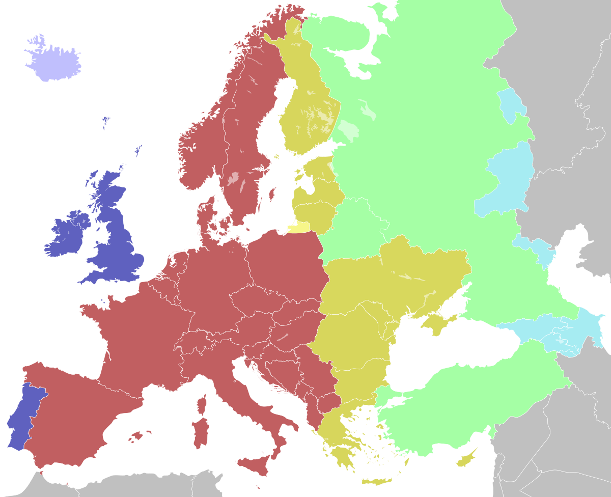

Suomessa noudatetaan...
Ladataan...
Suomessa noudatetaan kesät talvet Venäjän aikaa
Talviajan nollakohta kulkee Pietarin kohdalla. Kesäajan nollakohta on n. 500 km Moskovasta itään. Tästä huolimatta Suomessa seurataan juuri näitä aikavyöhykkeitä. Olisiko aika muutokselle?
Talviaika, eli UTC+2, seuraa 30°E pituuspiiriä, joka kulkee läpi ainoastaan Suomen itäisimpien osien, osapuilleen akselilla Lieksa–Pietari. Kesäaika, eli UTC+3, seuraa 45°E pituuspiiriä, joka on kaukana Suomen rajojen ulkopuolella, noin 500 kilometriä Moskovasta itään.
Manner-Suomen rajat kulkevat pituuspiirien 21°E ja 31°E välillä. Euroopan aikavyöhykkeen, UTC+1:n, nollakohta kulkee 15°E pituuspiirin mukaan. Länsi-Suomi on siis lähempänä Ruotsin ja muun Euroopan aikaa kuin nykyisin noudatettua aikaa.

Karttapohja: Wikimedia Commons / CC BY-SA 4.0
Kellojen siirtelystä ei tykkää kukaan
Kesäaika keksittiin Suomea etelämmässä 1800–luvun lopulla siirtämään valoisia tunteja illalle. Suomessa tässä ei ole mitään järkeä, sillä kesällä valoa riittää joka tapauksessa liiaksikin.
Euroopan parlamentti äänesti jo vuonna 2019 selvällä enemmistöllä kellonsiirron lopettamisen puolesta. Mitään ei kuitenkaan tapahtunut, sillä asia jumittui jäsenmaiden parlamentteihin. Suomessakaan ei ole vielä tehty päätöstä.
Päätös on kuitenkin tehtävä joskus. Kesäaikaan pysyvästi jääminen olisi Suomen kannalta surkea päätös, sillä se poikkeaa räikeästi aurinkoajastamme. Myös talviaika poikkeaa suurimmassa osassa maata aurinkoajasta. Molemmat nykyisistä aikavyöhykkeistä erottavat meitä ajallisesti suurimmasta osasta muuta EU:ta.
Kun aikaa kerran ollaan uudistamassa, niin miksi tyytyä kellojen siirtelystä luopumiseen? Olisi Suomen kannalta edullista lopettaa viimeinkin Venäjän ajan seuraaminen ja siirtyä maantieteellistä ja poliittista todellisuuttamme paremmin vastaavaan aikavyöhykkeeseen.

Suomi on aikavyöhykkeiden väliinputoaja
Kaikista parhaiten Suomen maantieteellistä sijaintia vastaisi puolituntinen aikavyöhyke, UTC+1,5. Tällöin Suomi olisi puoli tuntia Ruotsia edellä.
UTC+1,5:n nollakohta kulkee 22,5°E pituuspiirin myötäisesti hieman Turun itäpuolella. Se on nykyistä talviaikaa tarkempi osapuilleen Kouvolaa läntisemmässä Suomessa. Noin 80 % Suomen väestöstä asuu tämän linjan länsipuolella.
Puolituntiset aikavyöhykkeet ovat epätavallisia, mutta eivät ennenkuulumattomia; sellaista seurataan mm. Kanadassa, Intiassa ja Australiassa.
Vasemmalla olevassa kartassa punainen katkoviiva näyttää UTC+1,5:n nollakohdan ja harmaa katkoviiva kohdan, jonka länsipuolella UTC+1,5 on tarkempi, kuin UTC+2.
Yhtenäinen EU, yhtenäinen aika
Fiksuinta olisi kuitenkin noudattaa samaa aikavyöhykettä, kuin valtaosa muistakin EU-maista. Suomen liittolaiset ja kauppakumppanit ovat lännessä, UTC+1–vyöhykkeellä.
UTC+1 on tarkempi, kuin UTC+2 läntisimmissä osissa Suomea — UTC+1,5:n länsipuolella. Turusta itään päin mennessä se alkaa erkanemaan Auringon sijainnista UTC+2:a enemmän. Keski-Euroopan aikavyöhykkeessä on kuitenkin muita puolia, jotka kompensoivat miinusmerkkistä aikaeroa.
Muita EU-maita vastaavan ajan noudattaminen olisi Suomen etu, ja yhtenäinen aikavyöhyke olisi EU:lle kilpailuetu. Nykymallissa suomalaiset konttorit aukeavat ja sulkeutuvat tuntia keskieurooppalaisia vastineitaan aiemmin ja työntekijät lähtevät lounaalle eri aikaan, kuin eurooppalaiset kollegansa. Monikansallisessa talouselämässä tämä lisää päivittäiseen toimintaan turhaa kitkaa ja tekee työpäivien päällekkäisestä osasta kaksi tuntia lyhyemmän.
Nykypäivänä myös rajat ylittävät, etupäässä internetin kautta välittyvät ystävyyssuhteet ovat yleisiä. Aikaero nakertaa näihinkin käytettävästä ajasta käytännössä kaksi tuntia pois.

Kartta: Wikimedia Commons / CC BY-SA 4.0
Kellonajan erkaneminen Auringosta
Väärän aikavyöhykkeen noudattaminen tarkoittaa, ettei kellonaika vastaa varsinaista päivänaikaa. Valtaosa Suomesta on ympärivuotisesti Aurinkoa edellä.
Aikavyöhyke vastaa Auringon sijaintia taivaalla ainoastaan aivan Suomen itäisimmissä osissa ja sielläkin vain talviajassa. Mitä lännemmäksi mennään, sitä enemmän kello on Aurinkoa edellä. Kesäaika sotkee tilanteen täysin; kesällä Länsi-Suomi on 1,5 tuntia Aurinkoa edellä.
Aikavyöhykkeen nollakohdan länsipuolella eläminen, kuten Suomessa, ajaa ihmisiä valvomaan myöhempään. Kehon luontainen rytmi seuraa Auringon liikettä, ja aikavyöhykkeen länsireunalla Aurinko laskee kellotaulun mukaan myöhemmin. Ilmiötä kutsutaan sosiaaliseksi aikaerorasitukseksi (social jet-lag). Tutkimustiedon mukaan se aiheuttaa monenlaisia terveyshaittoja univajeesta kohonneeseen syöpäriskiin.
EU-ajan seuraamisella olisi päinvastainen vaikutus. Kellot kulkisivat puolisen tuntia Aurinkoa jäljessä. Aurinko laskisi hieman aiemmin, joka kesän valoisina iltoina on vain toivottavaa. Se myös nousisi hieman aiemmin, joka olisi eduksi talven pimeinä aamuina.
Katso vierestä löytyvästä laskurista, paljonko kello oikeasti kaupungissasi on.
Valitse lähin kaupunkisi ja laskuri kertoo sinulle paljonko kellon oikeasti pitäisi olla.
Keskimääräinen aurinkoaika on se aika, jota kellot näyttäisivät, jos niiden käyttämän aikavyöhykkeen nollakohta kulkisi suoraan kaupunkisi läpi.
Näennäinen aurinkoaika on Auringon varsinaista sijaintia vastaava aika; aika, jonka aurinkokello näyttäisi.
Maan kiertoradan eksentrisyyden ja Maan akselin kaltevuuden vuoksi keskimääräinen aurinkoaika vastaa näennäistä aurinkoaikaa vain neljä kertaa vuodessa. Ei-karkausvuosina nämä päivät ovat 15.4., 13.6., 1.9. ja 25.12.